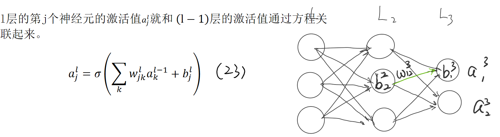
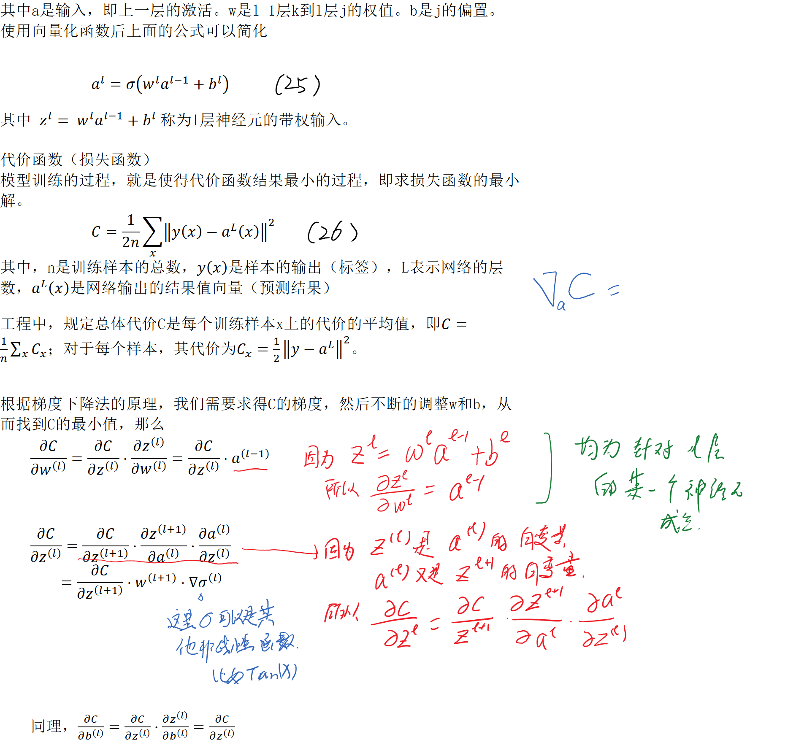
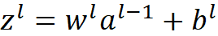

<!DOCTYPE html>
<html class="full-height">
<head><meta name="generator" content="Hexo 3.8.0">
  <meta charset="utf-8">
  <link rel="stylesheet" href="//cdn.bootcss.com/bulma/0.4.1/css/bulma.min.css">
  <link rel="stylesheet" href="https://maxcdn.bootstrapcdn.com/font-awesome/4.7.0/css/font-awesome.min.css">
  <script src="//cdn.bootcss.com/jquery/3.2.1/jquery.min.js"></script>
  
  <title>反向传播算法学习笔记 | DS-Snow</title>
  <meta name="viewport" content="width=device-width, initial-scale=1, maximum-scale=1">
  <meta name="description" content="方向传播算法的应用流程：  输入x：为输入层设置对应的激活值a1 前向传播：对每个l = 2, 3, …, L 计算相应的 和  输出层的梯度">
<meta name="keywords" content="机器学习">
<meta property="og:type" content="article">
<meta property="og:title" content="反向传播算法学习笔记">
<meta property="og:url" content="http://yoursite.com/2018/12/18/反向传播算法学习笔记/index.html">
<meta property="og:site_name" content="DS-Snow">
<meta property="og:description" content="方向传播算法的应用流程：  输入x：为输入层设置对应的激活值a1 前向传播：对每个l = 2, 3, …, L 计算相应的 和  输出层的梯度">
<meta property="og:locale" content="zh-CN">
<meta property="og:image" content="http://yoursite.com/2018/12/18/反向传播算法学习笔记/反向传播1.png">
<meta property="og:image" content="http://yoursite.com/2018/12/18/反向传播算法学习笔记/反向传播2.png">
<meta property="og:image" content="http://yoursite.com/2018/12/18/反向传播算法学习笔记/clip_image002.png">
<meta property="og:image" content="http://yoursite.com/2018/12/18/反向传播算法学习笔记/clip_image004.png">
<meta property="og:updated_time" content="2018-12-18T02:12:45.309Z">
<meta name="twitter:card" content="summary">
<meta name="twitter:title" content="反向传播算法学习笔记">
<meta name="twitter:description" content="方向传播算法的应用流程：  输入x：为输入层设置对应的激活值a1 前向传播：对每个l = 2, 3, …, L 计算相应的 和  输出层的梯度">
<meta name="twitter:image" content="http://yoursite.com/2018/12/18/反向传播算法学习笔记/反向传播1.png">
  
    <link rel="alternate" href="/atom.xml" title="DS-Snow" type="application/atom+xml">
  
  
    <link rel="icon" href="/favicon.png">
  
  
  <link rel="stylesheet" href="/css/common.css">
<link rel="stylesheet" href="/css/nav.css">
<link rel="stylesheet" href="/css/layout.css">
  

</head>
</html>
<body>
  <header id="navbar" class="overflow-hidden">
  <div class="container">
    <nav class="nav">
         <div class="nav-left">
            <a href="/" class="nav-item" style="font-size: 20px;">
              <span class="logo">Dyce Dong</span>'s Blog
            </a>
         </div>
        <div class="nav-center is-hidden position-relative" id="search_container">
            <div class="nav-item full-width full-height">
                <i class="fa fa-search has-padding" aria-hidden="true"></i>
                <input type="text" id="search_input" class="search-input full-height full-width" placeholder="Search post" autofocus>
                <i id="close_search" class="fa fa-times" aria-hidden="true"></i>
            </div>
            <div id="search_result"></div>
        </div>
        <div class="nav-right nav-menu">
            <a class="nav-item" id="search">
                <i class="fa fa-search" aria-hidden="true"></i>
            </a>
            
            <a class="nav-item" href="/">
                Home
            </a>
            
            <a class="nav-item" href="/works">
                My Works
            </a>
            
            <a class="nav-item" href="/about">
                About
            </a>
            
            <a class="nav-item" href="/tags">
                Tags
            </a>
            
        </div>
        <span class="nav-toggle" id="navMenuDropdown">
            <span></span>
            <span></span>
            <span></span>
        </span>
        <div class="navbar-menu position-absolute full-width content-box is-hidden-desktop is-flex flex-column center" style="top: 100%;">
            
            <a class="nav-item flex-1" href="/">
                Home
            </a>
            
            <a class="nav-item flex-1" href="/works">
                My Works
            </a>
            
            <a class="nav-item flex-1" href="/about">
                About
            </a>
            
            <a class="nav-item flex-1" href="/tags">
                Tags
            </a>
            
        </div>
    </nav>
  </div>
</header>

  <div id="main-wrap" class="position-relative" style="margin-top: 55px;">
      <div class="main-inner-content">
          <!--博文页面-->

<style>
    .header-box {
        height: 370px;
        filter: blur(10px);
        background-size: cover;
        background-color: lightsteelblue;
    }

    .post-box {
        padding: 15px;
        padding-top: 60px;
        min-height: 80vh;
        margin-top: -200px;
        border-radius: 4px;
        background-color: rgba(255,255,255,.8);
    }

    .post-avatar {
        height: 30px;
        width: 30px;
        border-radius: 50%;
    }

    .flow-chart {
        text-align: center;
    }

    img[alt="post-cover"] {
        display: none;
    }
</style>
<header>
    <div id="header_box" class="header-box"></div>
</header>
<section>
    <div class="container post-box">
        <div class="content post-title is-flex center flex-column" style="margin-bottom: 70px; overflow: auto;">
            <h1 class="has-text-centered" style="padding-bottom: 10px; border-bottom: 3px solid #fff">
                <strong>反向传播算法学习笔记</strong>
            </h1>
            
            <div class="is-flex align-center">
                
                <span style="padding:0 10px;"> <span class="sub-title">By</span> Dyce Dong</span>
                <span class="post-date sub-title">at: 2018-12-18</span>
            </div>
            
                <div>
                    
                         <a class="tag is-post-tag" href="/tags/机器学习/">机器学习</a>
                    
                </div>
            
        </div>
        <div class="content" style="overflow: auto">
            <p></p>
<p></p>
<p>方向传播算法的应用流程：</p>
<ol>
<li>输入x：为输入层设置对应的激活值a1</li>
<li>前向传播：对每个l = 2, 3, …, L 计算相应的 和 </li>
<li>输出层的梯度</li>
</ol>

        </div>
        <div class="post-reply">
            
                <!-- 来必力City版安装代码 -->
                <div id="lv-container" data-id="city" data-uid="">
                    <script type="text/javascript">
                        (function(d, s) {
                            var j, e = d.getElementsByTagName(s)[0];

                            if (typeof LivereTower === 'function') { return; }

                            j = d.createElement(s);
                            j.src = 'https://cdn-city.livere.com/js/embed.dist.js';
                            j.async = true;

                            e.parentNode.insertBefore(j, e);
                        })(document, 'script');
                    </script>
                    <noscript> 为正常使用来必力评论功能请激活JavaScript</noscript>
                </div>
                <!-- City版安装代码已完成 -->
            
            
        </div>
    </div>
</section>
<script>
    // 获取第一张图, 用以当封面背景图
    var img = document.querySelectorAll('img')[1]

    if (img) {
        var header_box = document.querySelector('#header_box')
        header_box.style.backgroundImage = 'url('+ img.src +')'
    }
</script>

<!-- for code block highlight --> 
<!-- theme.block_highlight -->
<!-- we do not guarantee the char sequences spell right, usr himself do it -->
<link rel="stylesheet" href="/css/highlight_rainbow.css">
<script src="/js/highlight.min.js"></script>
<script type="text/javascript"> hljs.initHighlightingOnLoad();</script>

      </div>
  </div>
  <style>
  #footer {
    min-height: 10vh;
    background: black;
    color: #fff;
  }

  #footer a {
    color: #e1e1e1;
  }
</style>
<footer id="footer" class="has-text-centered is-flex center">
  <div class="container has-padding">
    <div>
      <div>
        <!--请您保留作者署名, 主题制作来之不易-->
        Theme by <a href="http://haojen.github.io/">Haojen Ma</a>
        <br>
        Copyright © Dyce Dong 2019
        <br>
        Powered by <a href="http://hexo.io/" target="_blank">Hexo</a>
      </div>
    </div>
  </div>
</footer>

<script src="/js/search_core.js"></script>
<script src="/js/script.js"></script>

</body>
</html>